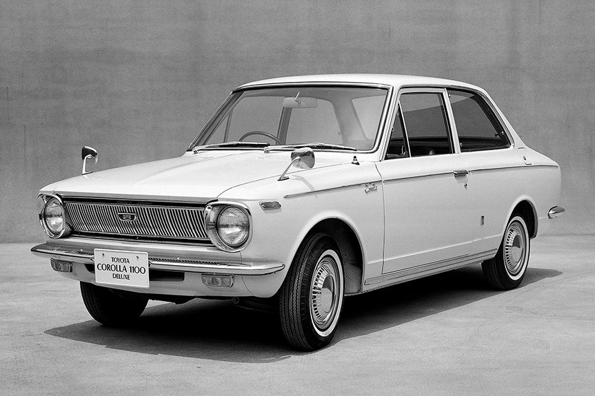

Toyota, originally named Toyoda, began constructing automobiles in 1936 in Japan. Their original models were inspired by the designs of Chevrolet and Dodge vehicles that the founder, Kiichiro Toyoda, saw while visting the United States.
Toyota cars are well-known for their durability. According to one commercial by the company (found here), approximately 80% of Toyota vehicles that were produced 20 years ago are still on the road. Due to their long-lasting nature, Toyota's customers know that they are purchasing a vehicle they can rely on.
One vehicle line of particular note is the Toyota Corolla. Since the first one released in 1966, over 50 million Toyota Corollas have been sold, This makes the Toyota Corolla one of, if not the most, popular cars of all time. Of course, the line has come a long way since the 60s. The 2023 Toyota Corolla will contain features such as a smart key system, a pre-collision system with pedestrian detection, and steering assist for lane departures.
1966 Toyota Corolla
2023 Toyota Corolla
Toyota Land Cruiser

Toyota HiLux

Toyota's first sports car, the 2000GT

2000GT used in "You Only Live Twice"

The Original Toyota Supra

Modern Toyota Prius

The compact RAV4